Arduino
Projects using an arduino microcontroller
IR Remote and Temperature Controlled Fan with Display
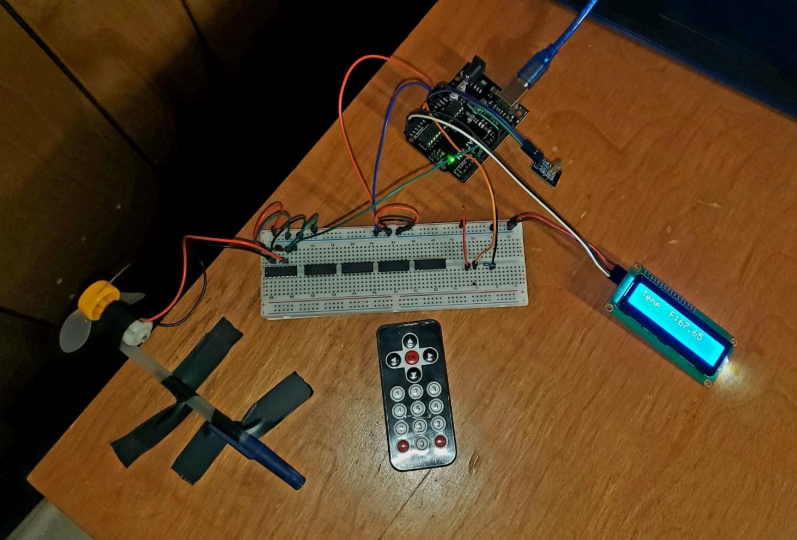
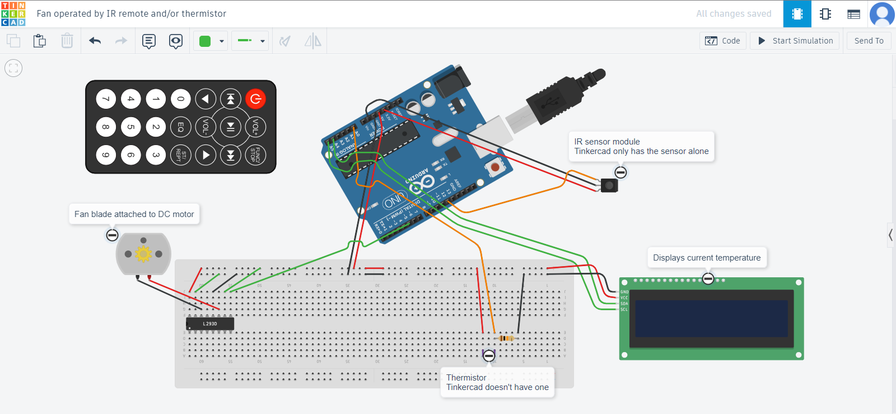
Lego Car
IR Remote for Slideshow Presentations
Circuit Analysis
Analysis of DC and AC circuits through calculation, simulation, and physical testing
ECEN150: Circuit Analysis I
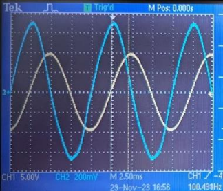
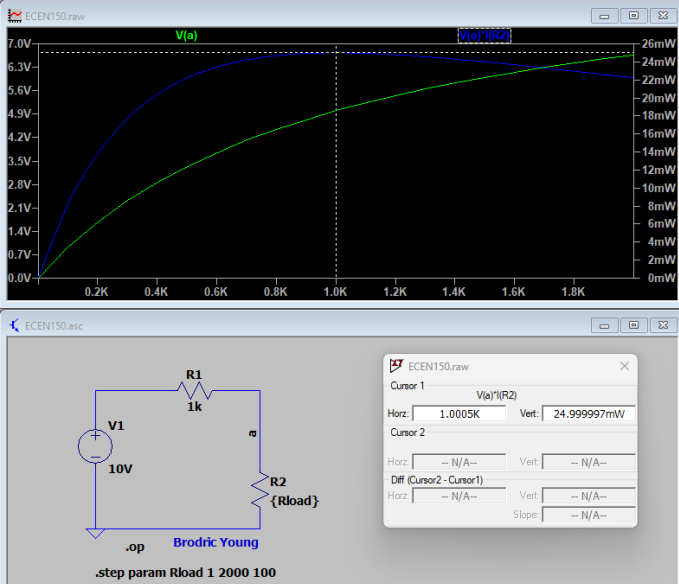
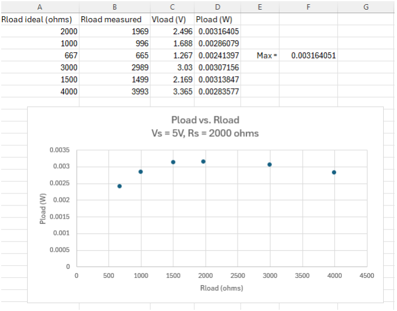
ECEN250: Circuit Analysis II
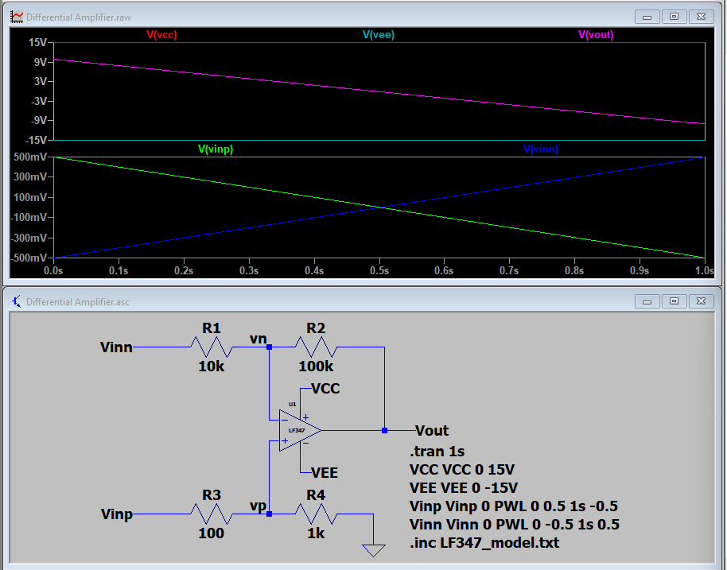
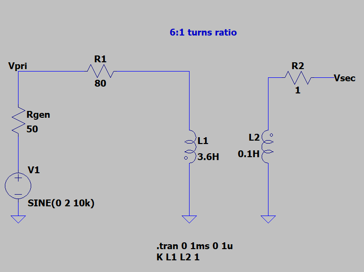
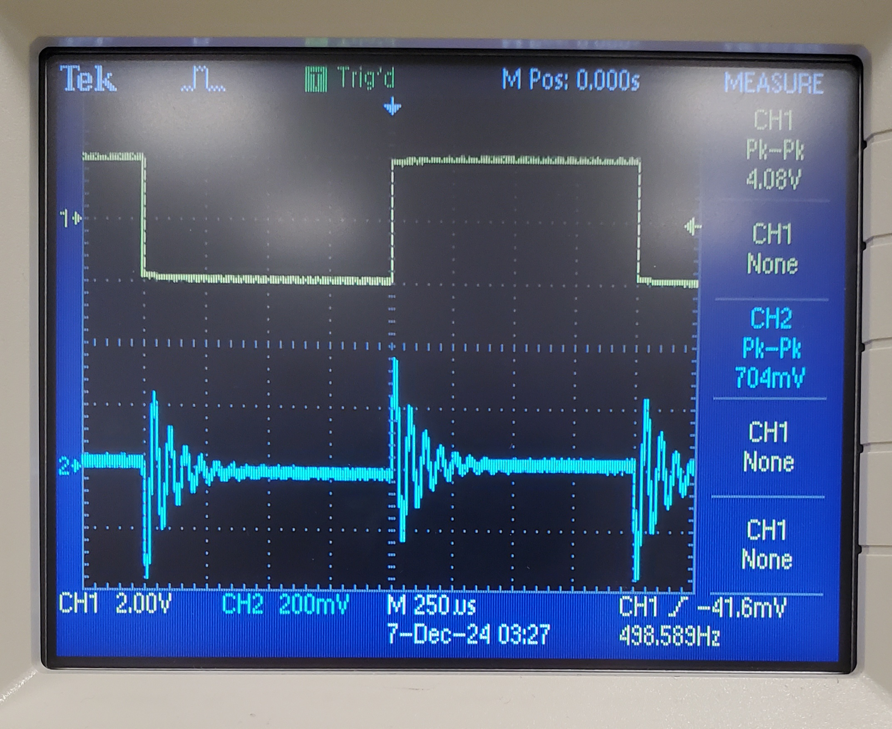
ECEN350: Electronic Devices and Circuits
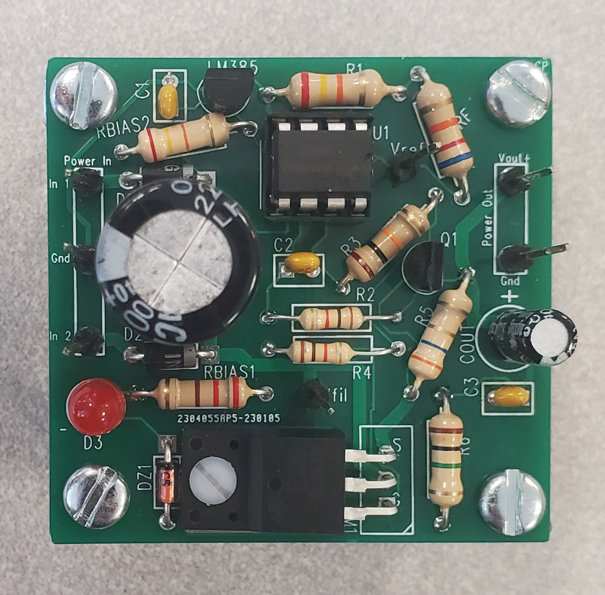
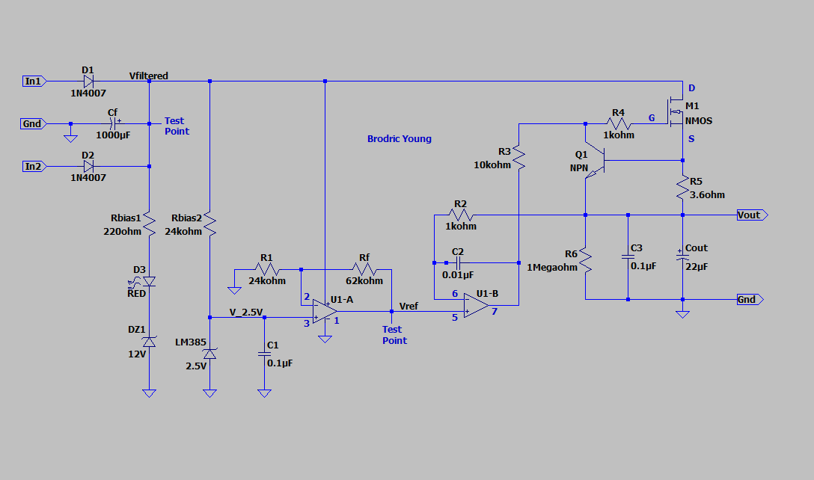
Digital Systems Design with Verilog
Design of digital systems using simulations in Logisim or implementation in Verilog
ECEN240: Fundamentals of Digital Systems
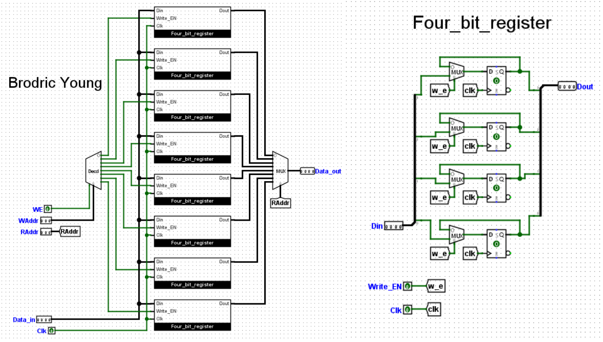
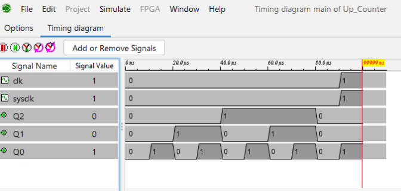
ECEN340: Digital Systems Design
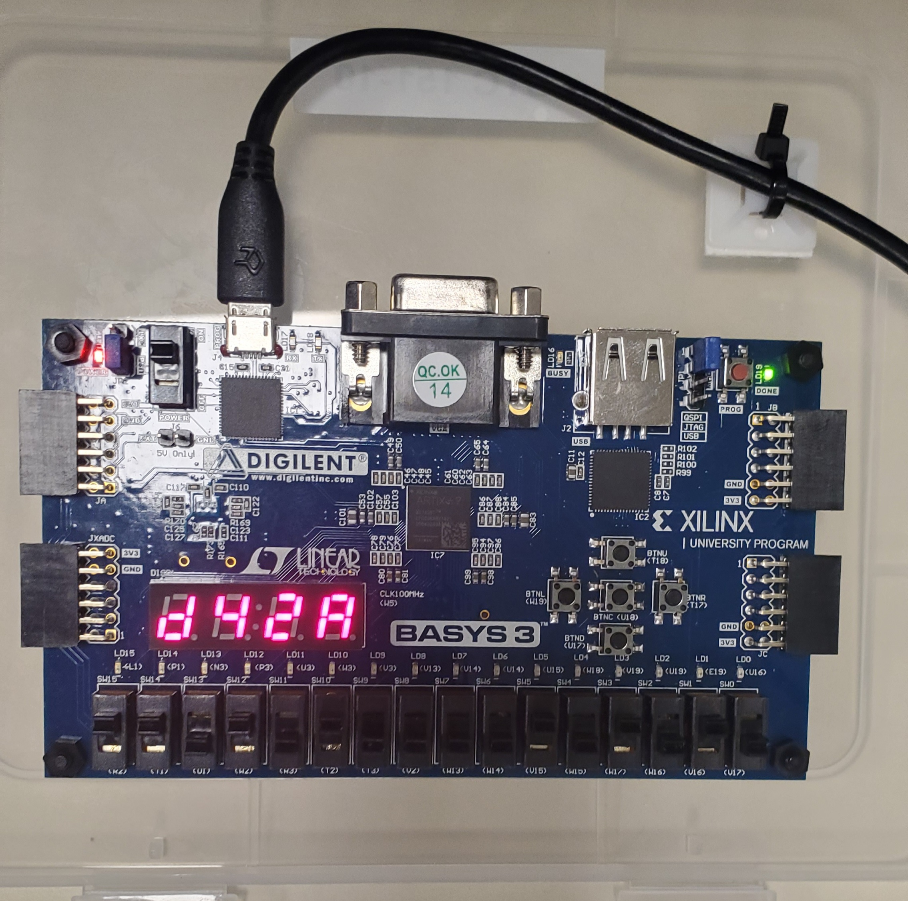
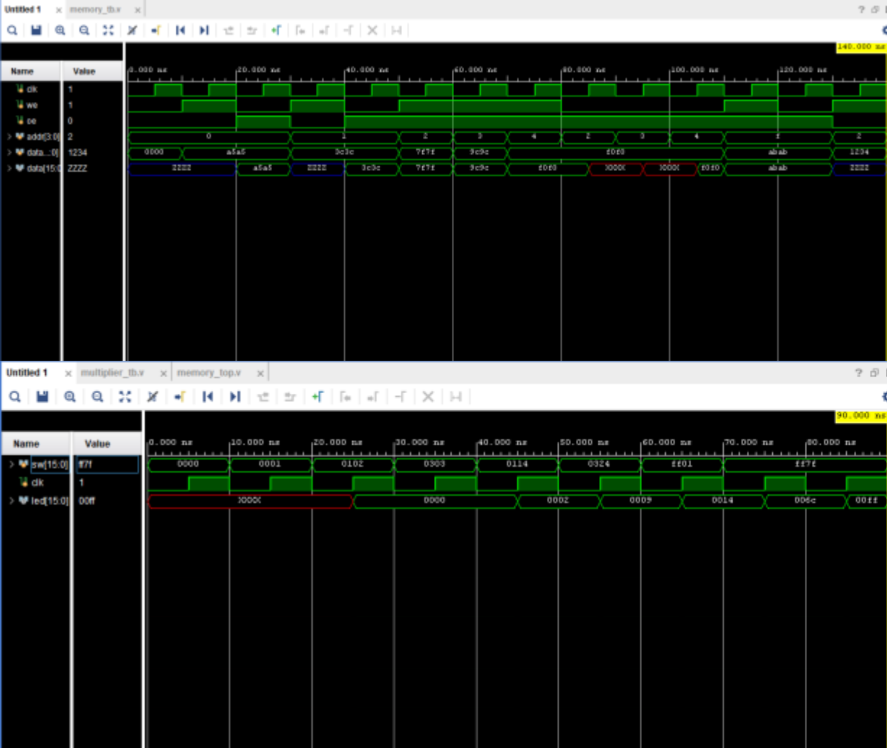
Printed Circuit Board Design and Fabrication
Design and simulate a PCB to be fabricated and soldering components to the PCB
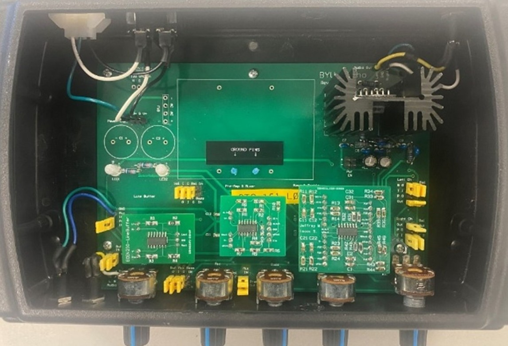
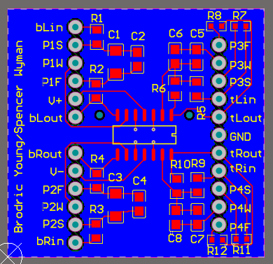
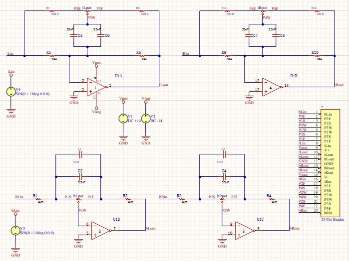
STM32-Nucleo
Projects using a STM32-Nucleo board, including drivers and configurations

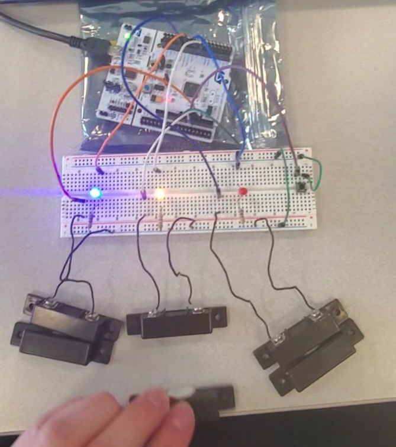